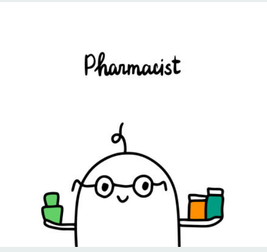

<mat-sidenav-container class="example-container">
  <mat-sidenav opened mode="side" class="side">
    <div fxLayout="column" class="side-div">
      <div fxLayout="row">
        
        <div fxLayout="column" class="white">
          <p> 
            {{user.basicInfo.name}} {{user.basicInfo.surname}} 
            <br>
            {{user.loyalty.category}}
            <br>
            <button mat-button> Uredi profil </button>
          </p>
        </div>
      </div>
      <mat-divider></mat-divider>
      <div class="margin-btn" fxLayout="column">
        <button mat-raised-button (click)="showPharamcySearch()"> Lista apoteka</button>
        <button mat-raised-button (click)="showVisits()"> Posete i savetovalista</button>
        <button mat-raised-button (click)="showPrescriptions()"> eRecepti </button>
        <button mat-raised-button (click)="showMedications()"> Moji lekova</button>
        
      </div>
    </div>
  </mat-sidenav>

  <app-user-pharmacy-search (emiter)="gotoPharmacyPage($event)" *ngIf="view === 'pharmacy-search'"></app-user-pharmacy-search>
  <app-user-visits *ngIf="view === 'user-visits'"></app-user-visits>
  <app-user-profile *ngIf="view === 'user-profile'"></app-user-profile>
  <app-user-reservations *ngIf="view === 'user-reservations'"></app-user-reservations>
  <app-user-prescriptions *ngIf="view ==='user-prescriptions'"></app-user-prescriptions>
  <app-pharmacy [pharmacyId]='pickedPharmacyId' *ngIf="view === 'user-pharmacy-page'"></app-pharmacy>
  
</mat-sidenav-container>